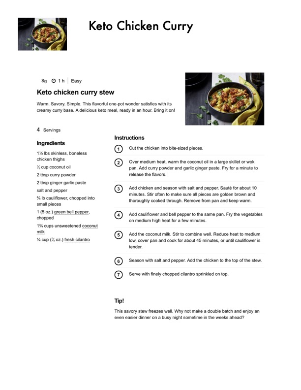

Keto Chicken Curry

Original cookbook page 501
Ingredients
- 1% lbs skinless, boneless
- chicken thighs
- , cup coconut oil
- 2 tbsp curry powder
- 2 tbsp ginger garlic paste
- salt and pepper
- % \b cauliflower, chopped into
- small pieces
- 1 (5 oz.) green bell pepper,
- chopped
- 1% cups unsweetened coconut
- milk
- % cup (% 0z.) fresh cilantro
Instructions
- % lb cauliflower, chopped into small pieces
- Cut the chicken into bite-sized pieces.
- Over medium heat, warm the coconut oil in a large skillet or wok pan.
- Add curry powder and garlic ginger paste.
- Fry for a minute to release the flavors.
- Add chicken and season with salt and pepper.
- Sauté for about 10 minutes.
- Stir often to make sure all pieces are golden brown and thoroughly cooked through.
- Remove from pan and keep warm.
- Add cauliflower and bell pepper to the same pan.
- Fry the vegetables on medium high heat for a few minutes.
- Add the coconut milk.
- Stir to combine well.
- Reduce heat to medium low, cover pan and cook for about 45 minutes, or until cauliflower is tender.
- Season with salt and pepper.
- Add the chicken to the top of the stew.
- Serve with finely chopped cilantro sprinkled on top.
Recipe #501 from collection